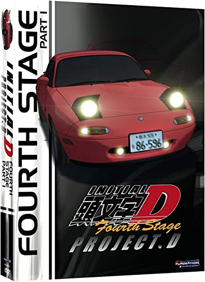
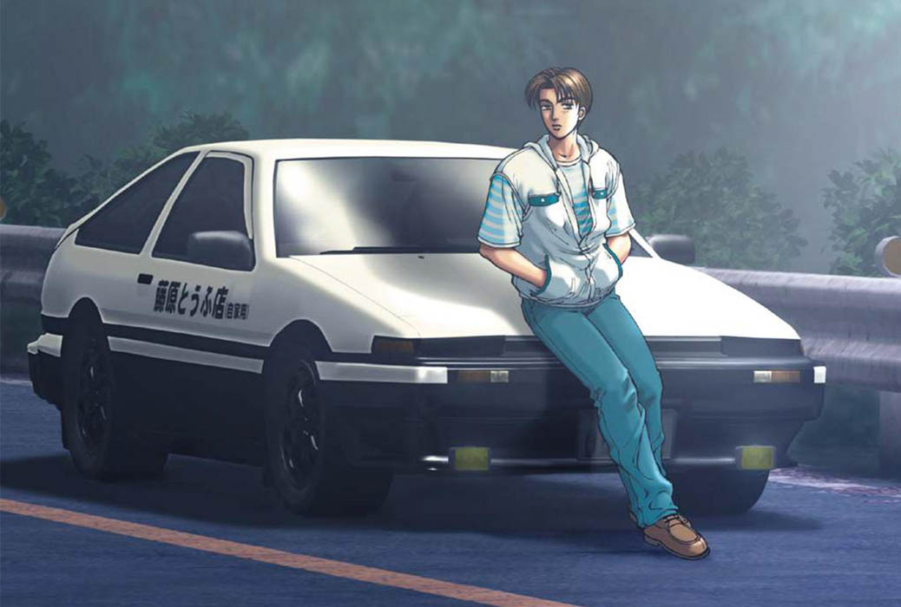
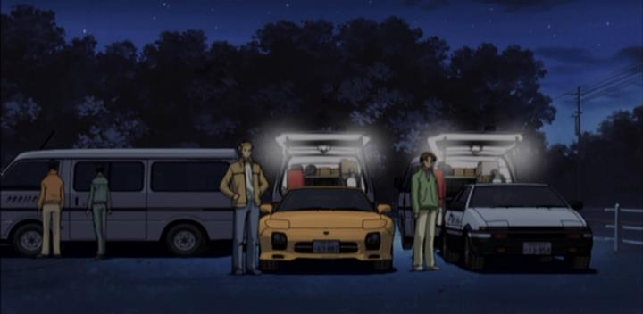

Ordem Cronológica
Fourth Stage
Essa série fala sobre os desafios do novo time criado por Ryosuke, o Projeto D, cujos membros são Ryosuke Takahashi (líder e estrategista), Takumi Fujiwara (especialista em descidas), Keisuke Takahashi (especialista em subidas) e uma equipe composta por membros do RedSuns. O time viaja pelas diversas províncias do Japão, desafiando os times e postando os resultados das corridas e recordes em seu website. Cada corrida faz parte do plano de Ryosuke de desenvolver uma parte específica da habilidade dos pilotos.
Takumi se torna mais maduro, adquirindo confiança e conhecimento mecânico, enquanto Keisuke melhora suas técnicas de pilotagem. Takumi instintivamente desenvolve novas técnicas através da sua ingenuidade após certa ajuda de Ryosuke, como passar o oponente com suas luzes dos faróis desligados, assim o oponente não pode te ver, ou usar o peso do carro para usar técnicas semelhantes ao vala de drenagem que ele utiliza em Akina.
Os adversários do Projeto D são cada vez mais habilidosos. Seus primeiros adversários são membros de uma equipe local, mas logo eles enfrentam alunos de uma escola de corrida profissional, enfrentando até mesmo pilotos profissionais. Um deles é um formando da escola, buscando uma revanche; o outro é um piloto de rally chamado por um time que perdeu anteriormente para o Projeto D, enfrentando Takumi com um carro ultra-leve, no caso um Suzuki Cappucino, com um motor de menos de 1.0 litros com turbo.
A cada área que o Projeto D conquista, novos relacionamentos e antigos inimigos pioram as coisas para o time. Keisuke rejeita Kyoko, uma corredora de rua e piloto de um Mazda RX-7 Type RZ(FD3S) que se conheceram antes de se enfrentarem em uma corrida, temendo que ter uma namorada o distraia de seus objetivos quanto ao Projeto D. Enquanto isso, Wataru observa o Projeto D com interesse, procurando por uma maneira de vencê-los.
A equipe enfrenta outro tipo de desafio quando novos oponentes decidem trapacear e intimidar ao invés de vencer por habilidade. Eles danificam o FD3S de Keisuke, que pega emprestado o FD3S de Kyoko para vencê-los.
Eventualmente o time enfrenta os membros mais velhos do time Purple Shadow. Hoshino Kouzou, conhecido como "Pé de Deus", é um piloto conhecido por sua habilidade suprema de aceleração (que permite fazer seu carro, um Nissan Skyline GT-R V-spec II Nur R34, correr sem turbo-lag) e possui uma habilidade única de manter sua concentração. Ele grita loucamente enquanto dirige para liberar sua tensão e impedir que erre por causa do estresse. Com essas duas técnicas, ele é capaz de fazer derrapagens com seu Skyline 4WD (Tração integral ou tração nas 4 rodas), algo normalmente quase impossível de se fazer com um Skyline normal, por causa de seu sistema que corrige o carro quando ele perde tração. Seu companheiro é Joushima Toshiya, o "Mão de Deus", um piloto conhecido por dirigir seu Honda S2000 com apenas uma mão, lembrando a "Corrida da Morte com Fita" adesiva que Takumi enfrentou contra Shingo no primeiro estágio. Com sua técnica de pilotar com uma mão só, ele pode limitar a virada brusca e executar uma derrapagem ideal, conservando seus pneus enquanto garante velocidade nas curvas. Isso ainda permite que ele utilize linhas de direção infinitas durante a corrida. "Mão de Deus" gastou diversos anos tentando encontrar os limites de sua técnica. Posteriormente ele ensina a Takumi sobre sua técnica de direção com uma só mão. Apesar de duvidar que Takumi comece a dirigir com uma mão só, ele acredita que irá aprender a utilizar as linhas de direção a seu favor.


